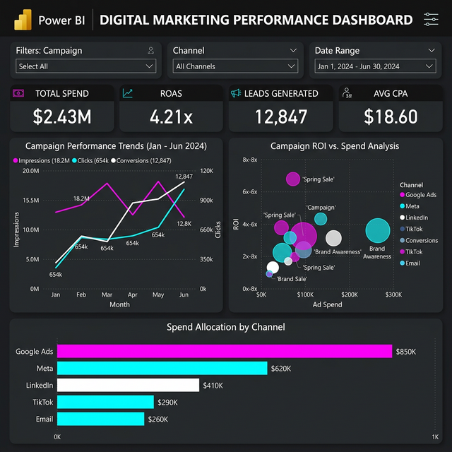

The Challenge
A B2B SaaS company was spending $2.4M annually across Google Ads, Meta, LinkedIn, TikTok, and email marketing but couldn't correlate spend to pipeline revenue. Each channel had its own reporting dashboard, attribution was inconsistent, and the CMO couldn't answer "which $1 produces the best return?" with any confidence.
Key Business Questions
- What is our true ROAS by channel when including the full conversion lag?
- Which campaigns are generating the highest quality leads (SQL conversion)?
- How should we reallocate budget across channels to maximize pipeline?
- What is the CPA trend, and where are diminishing returns setting in?
The Solution
We built a Campaign Performance Engine that unifies ad platform APIs, CRM data, and revenue attribution into a single marketing intelligence hub:
💰 Spend & ROAS
$2.43M total spend yielding 4.21x blended ROAS with channel breakdown: Google Ads ($850K), Meta ($620K), LinkedIn ($410K), TikTok ($290K), Email ($260K).
📊 Campaign Trending
6-month performance curves tracking impressions (18.2M), clicks (654K), and conversions (12,847) with anomaly detection for campaign fatigue.
🎯 ROI Bubble Chart
Campaign-level ROI vs. spend scatter plot identifying outperformers ("Spring Sale" at 6.2x) and underperformers for budget reallocation.
📈 Lead Quality Scoring
12,847 leads generated at $18.60 CPA with ML-powered quality scoring predicting SQL conversion probability by channel and creative.
Dashboard Views

Technical Implementation
Data Architecture
Fivetran connectors for ad platform APIs, dbt transformation layer for unified attribution, Snowflake warehouse with incremental refresh every 4 hours.
Key Metrics
- Return on Ad Spend (ROAS)
- Cost per Acquisition (CPA)
- Lead-to-SQL Conversion %
- Pipeline Influenced Revenue
Integrations
- Google Ads & Analytics 4
- Meta Business Suite
- LinkedIn Campaign Manager
- HubSpot CRM (Pipeline)
Automation
Automated budget reallocation alerts when a channel's marginal ROAS drops below 2x. Weekly spend pacing reports with forecasted month-end totals.
The Results
"The bubble chart was a revelation. We discovered that our TikTok 'Spring Sale' campaign was outperforming everything at 6.2x ROAS, but only had 5% of budget. Rebalancing drove a 37% pipeline increase in one quarter."